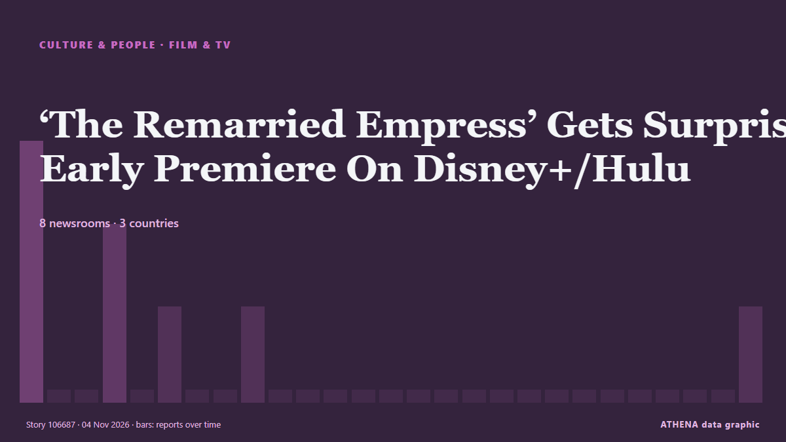

السينما والتلفزيون
برعايةبرعاية  Cybernetics and Artificial Intelligence Lab Welcome to the Cybernetics and Artificial Intelligence Laboratory, established at the Department of Business Administration of the National and Kapodistrian University of Athens. The lab is headed by Professor Dimitrios Thomakos. The lab aims to do research that can be published in top venues. Our research uses tools and methods of Artificial Intelligence, and lies in the following areas: - Forecasting - Decision making - Cyber security - Finance We are always looking forward to collaborating with exceptional students!
Cybernetics and Artificial Intelligence Lab Welcome to the Cybernetics and Artificial Intelligence Laboratory, established at the Department of Business Administration of the National and Kapodistrian University of Athens. The lab is headed by Professor Dimitrios Thomakos. The lab aims to do research that can be published in top venues. Our research uses tools and methods of Artificial Intelligence, and lies in the following areas: - Forecasting - Decision making - Cyber security - Finance We are always looking forward to collaborating with exceptional students!
| 22 أكتوبر | 0 |
|---|---|
| 23 أكتوبر | 0 |
| 24 أكتوبر | 0 |
| 25 أكتوبر | 0 |
| 26 أكتوبر | 0 |
| 27 أكتوبر | 1 |
| 28 أكتوبر | 0 |
| 29 أكتوبر | 2 |
| 30 أكتوبر | 3 |
| 31 أكتوبر | 1 |
| 1 نوفمبر | 7 |
| 2 نوفمبر | 3 |
| 3 نوفمبر | 6 |
| 4 نوفمبر | 0 |
تُعرض العناوين بالإنجليزية كما نُشرت.

‘The Remarried Empress’ Gets Surprise Early Premiere On Disney+/Hulu
'The Remarried Empress,' starring Shin Mina, Ju Jihoon, Lee Jongsuk and Lee Seyoung, will debut November 3 on Disney+ and Hulu, a day ahead of schedule. من Forbes Business
Cinemark Stock Pops On Record Q3 Revenue
Cinemark, the nation’s third largest exhibitor, saw revenue jump 23% to $1.1 billion for the three months ended in September, its best-ever third quarter amid a broad box office rebound. من Deadline
Kristin Scott Thomas stars in festive John Lewis jaunt with toy dog Pickles
Dame Kristin and Pickles, voiced by Paul Whitehouse, take off on a tuk-tuk ride around London to find a better gift than cash inside a Christmas card. من The Irish News (Belfast)
James Bond actor Ben Whishaw says franchise ‘needs to be reinvented’
The 46-year-old has starred in three James Bond films alongside Daniel Craig as the character of Q. من Evening Standard (London)
Thomas Ong, 57, slips & fractures ankle 10 days into 45-day Japan trip after photographing waterfall
He will let his ankle heal by itself instead of having surgery. من Mothership
Bollywood actor Tusshar Kapoor gets Rs50m extortion threat in Lawrence Bishnoi gang's name
Dubai: Bollywood actor Tusshar Kapoor has reportedly received an extortion threat demanding Rs50 million from a caller claiming to be associated with the Lawrence Bishnoi gang, prompting an… من Gulf News
Keira Knightley is ‘utterly mesmeric’, says Black Doves co-star Andrew Buchan
Buchan has reprised his role as Knightley’s on-screen husband in the Netflix thriller. من Evening Standard (London)
'I Play Rocky' tells the underdog story behind the classic underdog film
LOS ANGELES: A young Sylvester Stallone had one non-negotiable demand when he was trying to sell his script about a small-time boxer named Rocky Balboa. من Business Recorder
Newsom’s November Surprise: Boost CA Film & TV Tax Incentives To $1B ASAP, Says Exiting Governor
The day before his successor as California’s governor is elected in the high stakes midterms, Gavin Newsom is going out with a bang. من Deadline
'Godzilla Minus Zero2 gets loud applause at Tokyo film festival
Since the release of Godzilla Minus One in 2023, things have gotten a bit crazy... من Empire
Fallon Sherrock speaks out after criticism over £501,000 Luke Littler win
The Netflix show saw Luke Littler take on a number of amateur contestants who were trying win £501,000. من Liverpool Echo
Strictly Come Dancing fans 'absolutely devastated' as spoiler reveals who left
Strictly Come Dancing fans have shared their disappointment after the latest results were leaked online. من WalesOnline
Michael Mann, director of Heat and Collateral, accidentally shoots self at gun range
He sustained a "superficial injury" in the incident. من CNA (Channel NewsAsia)
Japanese ex-adult film actress recalls ‘terror’ after alleged drugging in Hong Kong
Former Japanese adult film actress Mao Hamasaki has spoken out about the “terror” and “harm” of drugs after fighting for her life when she consumed a suspected spiked drink while performing as a disc… من South China Morning Post
Being like Jean-Luc Picard
Patrick Stewart had dozens of credits on the screen and the stage, but for many people he will always be Capt. من CBC News (alternative feed)
Wicker movie review: Olivia Colman, Alexander Skarsgard shine in a strange, wondrous fable
Directed and written by Alex Huston Fischer and Eleanor Wilson, the film stars Olivia Colman and Alexander Skarsgard. من Scroll.in
Florida child sex sting operation ensnares 17 theme park workers, including Disney and Universal
Disney told investigators it had fired employees connected to the arrests, according to a report. من The Independent
Patrick Stewart, Star Trek and X-Men actor, dies at 86
Sir Patrick Stewart, the acclaimed British actor best known for playing Captain Jean-Luc Picard in Star Trek: The Next Generation and Professor Charles Xavier in the X-Men film franchise, has died at… من Gulf News
Inde Navarrette Takes Swipe at Shane Gillis During ‘SNL’ Monologue
Following a Trump-centric cold open that featured the return of Tom Hanks’ David S. من Variety